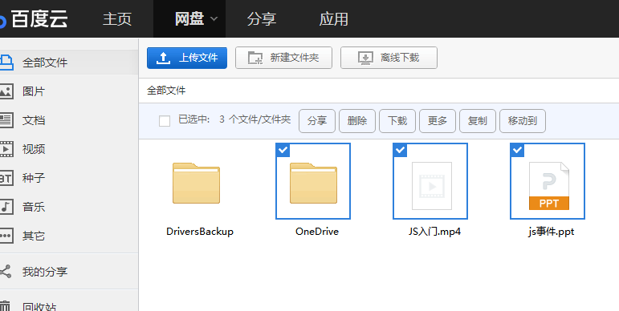
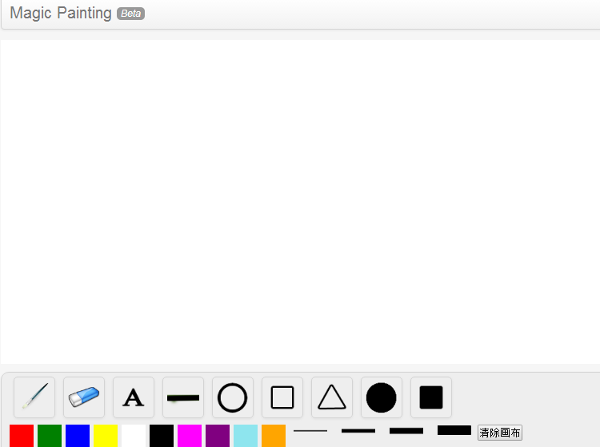

-
- Basic info. 基本信息
- 个人信息: 宋亚成 / 男 / 26岁
- 教育经历: 硕士 / 浙江理工大学信息学院 / 2017年应届生
- 英语水平: CET-4
- 常用ID: Faaaith
- GitHub: https://www.github.com/faaaith
-
- Experience. 项目介绍
个人项目
-
个人任务管理系统 源代码 Demo
主要功能，任务的两级分类、增删查改、标记完成情况、根据日期分类等功能。
技术路线，HTML(5),CSS(3)，Less,JavaScript和RequireJs来实现前端模块化构建 及数据可视化交互。移动端采用了CSS3的Animation新属性来实现动画效果，可 兼容常见的移动端浏览器。数据存储使用了localStorage来保存本地用户的任务 数据，并处理了可能出现的XSS安全隐患，使用Yo,Brower,Gulp等工具来实 现前端自动化构建。

-
微型JS库
实现了一个微型JS库，包括对原生 JavaScript 数据类型及语言基础、DOM、事件、BOM、Ajax等的操作和封装，并运用这个JS库实现了表单输入交互、倒计时工具、轮播图、输入提示框、界面拖拽交互
-
百度网盘首页 源代码 Demo
用到了js的几个核心功能，如DOM增删改，BOM右键自定义菜单，BOM碰撞检测，登录框拖拽与浏览器边界检测，本地存储localstorage，js中的运动等等。所有功能都是用原生JavaScript完成。
 -
HTML5画图工具 源代码 Demo
主要学习并用到了HTML5的新属性Canvas,功能包括自由画笔、橡皮擦、文字填充、

画三角形、画圆等等，目前界面的UI和存在的BUG有待完善
-
- Skill. 技能清单
Web前端
-
HTML / CSS
能够编写语义化的 HTML，模块化的 CSS，熟悉部分HTML5，CSS3属性
了解 Less / Sass 等CSS预处理和后处理方法、工具
-
JavaScript
熟悉原生Javascript和jQuery
了解Javascript模块化、面向对象的编程方式
-
其他
了解移动端常规布局，响应式布局
了解Yo Brower Gulp Git等 前端自动化工具的配置和使用
了解前端安全、性能优化方面的一些知识
前端无关
-
机器学习 计算机视觉
研究生期间从事机器学习和目标识别算法方向研究，对支持向量机，神经网络，极限学习机等算法， 词袋模型，特征提取和构建有一定的研究。
投稿论文"RFSEN-ELM Selective ensemble of extreme learning machines using rotation forest for image classification"

宋亚成的简历
"To Be Rottern Or To Burn"
-
- Contact. 联系方式
- 邮箱: 307874677@qq.com
- 微信: sweat5321
- QQ: 307874677
-
- Application. 应聘岗位
- 前端工程师
-
- Tech. 技能点
JavaScriptHTMLCSSjQueryCMatlab
我是一个充满活力、对前端由衷热爱、善于发现问题的前端工程师。
我目前正在寻找前端工程师岗位，希望借此机会为贵司献上我的一点绵薄之力，快招我到碗里来吧！